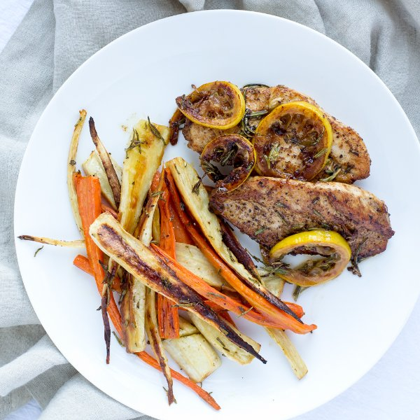

Lemon-Butter Chicken with Honey-Roasted Parsnips & Carrots

Nutrition (per serving)
535.6 kcalCalories
41.1 gProtein
41.2 gCarbs
23.8 gFat
Full nutrition table
| Calories | 535.6 kcal |
| Total fat | 23.8 g |
| Saturated fat | 9.5 g |
| Trans fat | 0.5 g |
| Cholesterol | 154.7 mg |
| Sodium | 175.2 mg |
| Carbohydrates | 41.2 g |
| Fiber | 9.4 g |
| Sugars | 19.7 g |
| Protein | 41.1 g |
| Potassium | 1399.1 mg |
| Calcium | 114 mg |
| Iron | 2.2 mg |
| Vitamin A | 67.1 IU |
| Vitamin C | 34.4 mg |
| Vitamin D | 10.2 IU |
Cookware
Ingredients
- 8 mediumcarrots
- 1 ½ lbchicken breasts, boneless skinless
- 1 small pkgfresh rosemary
- 2lemons
- 4 mediumparsnips
- black pepper
- butter, unsalted
- extra virgin olive oil
- honey
- salt
Steps
- Heat the oven to 450°F.
- Wash and dry the fresh produce.8 medium carrots
4 parsnips
1 small pkg fresh rosemary
2 lemons - Trim and discard the stem ends and peel the carrots; quarter lengthwise into wedges and transfer to a baking sheet.
- Trim and discard the stem ends and peel the parsnips; cut lengthwise into uniform wedges (about the same size as the carrots); add to the baking sheet.
- Pinch the top of the rosemary stems with one hand while sliding the other hand down to remove the leaves; discard the stems and roughly chop the leaves. Sprinkle half of the rosemary over the vegetables (save the rest for the chicken).
- Drizzle the vegetables with olive oil and honey and season with salt and pepper; toss to coat.2 tbsp extra virgin olive oil
2 tbsp honey
½ tsp salt
½ tsp black pepper - Spread the vegetables in an even layer and place the sheet in the oven. Roast, stirring once halfway through the cooking time, until browned and tender, 15 to 20 minutes.
- Holding a knife parallel to the cutting board, cut the chicken in half horizontally to form thin fillets.1 ½ lb chicken breasts, boneless skinless
- Season the chicken with salt and pepper on both sides.½ tsp salt
½ tsp black pepper - Heat a skillet over medium heat.
- Add butter to the skillet and swirl to coat the bottom.2 tbsp butter, unsalted
- Place the chicken in the skillet and cook until browned and cooked through, 3 to 4 minutes per side. Transfer to a plate.
- Zest and juice one of the lemons into a small bowl, then add the remaining rosemary. Thinly slice the other lemon into rounds.
- Once the chicken has been transferred, add more butter and the lemon slices to the skillet. Cook the lemon, turning once, until lightly browned, 2 to 3 minutes.2 tbsp butter, unsalted
- Return the chicken to the skillet and pour in the lemon-rosemary sauce. Turn the chicken over a few times to coat it in the sauce. Cook until the juices are reduced, 1 to 2 minutes.
- Divide the chicken and lemon slices between plates and add the roasted vegetables on the side. Enjoy!